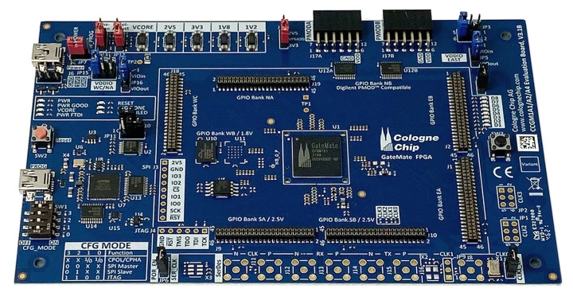

Introduction

A Field-Programmable Gate Array (FPGA) is an integrated circuit - a silicon microchip - that can be configured by an engineer after it has been manufactured. Unlike the processor in your desktop or mobile phone, which has permanent internal circuitry, an FPGA leaves the factory as a blank slate of individual logic components. By using specialised code, a developer can physically define how these components connect, effectively building a custom hardware circuit tailored to a specific task.
To understand why this is unique, consider traditional computing. Microprocessors (like CPUs) process software applications by fetching instructions one after another and running them through static internal components. An FPGA behaves entirely differently. It does not run lines of software instructions sequentially; rather, it uses its physical hardware fabric to process data simultaneously across multiple custom pathways. When one configures an FPGA, they are using code to construct physical hardware architecture rather than writing a traditional software program.
Key Difference
Traditional computing structures are bound by temporal execution (processing data line-by-line over ticks of a system clock). Contrarily, FPGAs operate via spatial execution (processing multiple datasets at the exact same time in distinct physical regions of the chip).
Structural Comparison
To understand where FPGAs fit within modern computer engineering, here are the architectural characteristics below:
| Chip | CPU / Microprocessor | FPGA Matrix | ASIC (Custom Silicon) |
|---|---|---|---|
| Execution Type | Sequential (software-driven) | Parallel (hardware-driven) | Parallel (hardware-driven) |
| Flexibility | Infinite via software updates | Reconfigurable in the field | None (fixed at factory) |
| Development Cost | Very low | Medium | Extremely high (millions of $) |
| Unit Cost | Low to medium | Medium to high | Extremely low (at industrial scale) |
What are FPGAs Made Of?
At the silicon wafer level, an FPGA is arranged as a repeating grid of internal building blocks connected by flexible routing pathways. These blocks are managed through high-speed Static RAM (SRAM) memory cells.
1. Configurable Logic Blocks (CLBs)
The CLB is the foundational computing element of the chip, distributed in columns across the silicon die. Each individual CLB is engineered to execute arbitrary logical and mathematical formulas through a mechanism known as a Look-Up Table (LUT).
A LUT functions essentially like a high-speed RAM unit. When a designer implements a custom logical equation (such as a 4-input AND/OR structure), the system converts this logic into a truth-table bit sequence. This sequence is loaded into the LUT's memory cells upon device boot. When external inputs reach the address pins of the LUT, it retrieves the matching output state instantly.
[ clb routing diagram ]
inputs (a, b, c, d)
│
▼
┌───────────────┐
│ look-up table │ ───► asynchronous combinatorial output
│ (lut-4) │ │
└───────────────┘ ▼
│ ┌───────────────┐
└──────────────►│ flip-flop │───► synchronous clocked output
│ (register) │
└───────────────┘
▲
│
clk signal
Directly coupled to the LUT output is a Flip-Flop register. This element introduces synchronous time controls, transforming unstable combinatorial circuits into highly predictable, clock-aligned sequential networks.
2. Programmable Interconnect Matrix
Woven between rows and columns of CLBs are thousands of physical horizontal and vertical wire traces. Where these grid tracks cross, there are specialized programmable switch matrices. By loading a configuration file, specific paths are joined or cut, creating structural electrical highways across the die.
3. Input / Output Blocks (IOBs)
Arranged at the outermost borders of the die, IOBs serve as the electrical interfaces to external hardware components. These pins are highly flexible and can be structured to support a wide range of standard voltage specifications (such as LVCMOS, LVDS, and TTL).
4. Heterogeneous Hard-Core Subsystems
Modern professional architectures place dedicated, hard-wired components alongside the programmable fabric to boost execution speeds and minimize power consumption:
- Block RAM (BRAM): High-density dual-port internal memory blocks used to store system arrays and data queues without exhausting flexible logic blocks.
- DSP Slices: Built-in hardware multipliers and accumulators tailored to calculate fast, complex signal processing mathematics.
- Clock Generation Modules (PLL/MMCM): Special circuits that multiply, divide, and phase-shift system frequencies to keep all execution paths perfectly timed.
Real-World Applications
FPGAs occupy a distinct operational niche between general-purpose processors and custom ASICs. They excel in workloads characterised by massive data streams that must be processed with predictable, ultra-low latencies.
[ targeted fields ]
High Throughput / Low Latency Deployments
├── Telecommunications ──► 5G Baseband Filter Arrays & Beamforming
├── Defense Systems ──► Real-Time Phase-Array Radar Signal Processing
├── Data Infrastructure──► AI Acceleration, Network Encryption Pipelines
└── Prototyping ──► Full Emulation of ASICs Before Factory Tape-Out
Key industries relying on FPGA infrastructure include:

- Aerospace & Avionics: Real-time sensory tracking loops, flight control computers, and secure cryptographic data links where predictable timing is mission-critical.
- Telecommunications Infrastructure: Managing complex signal beamforming equations within high-throughput cellular base stations and optical network nodes.
- Data Centre Acceleration: Operating adjacent to server CPUs to offload deep learning inference models, live video transcoding transformations, and complex database sorting routines.
- ASIC Functional Emulation: Simulating unreleased physical processor architectures on physical test setups to completely run and debug low-level firmware before sending designs to costly manufacturing lines.